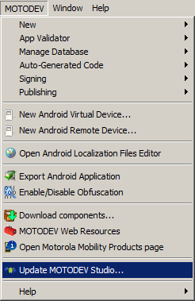

NOTE: This blog post was originally hosted on Motorola's MOTODEV web site. That site was decommissioned in 2012. I've made every attempt to preserve blog posts and accompanying forum posts with their original content. Many web links are no longer valid, so they have been removed and replaced with emphasized text.
by Eric Cloninger (EricC)
Happy Solstice everyone (Winter and Summer)!
The MOTODEV tools team has a present for all you good Android developers. Fresh from the oven (or off the barbeque for our antipodean friends) is a fresh release of MOTODEV Studio.
In this release, we've added several new items :
We're doing this release today in a restricted manner (as an update only) because the holidays are upon us. Many of the MOTODEV team members will be on holiday beginning this Friday and at different times through the next 12 days. While we will be monitoring the discussion boards , we won't be back to our full staff level until January 3rd. We're confident that MOTODEV Studio 3.1 will be fine, but we won't be as quick to answer questions as we would be at other times of the year.
Most users should continue to use Studio 3.0.x until after the New Year. Users who want access to the latest plugins, including ADT 16, the way to access this release is via the MOTODEV menu. Choose MOTODEV -> Update MOTODEV Studio as shown below.

We'll have the standalone installers and a plugin archive ready to go when we return from the break. We also have something new that I think you'll enjoy.
On behalf of the MOTODEV tools team, I would like to thank you all for downloading and using MOTODEV Studio this year. We've had a lot of great feedback from everyone and we've enjoyed working with you.
Best wishes for joyful New Year and a prosperous and happy 2012.
Eric